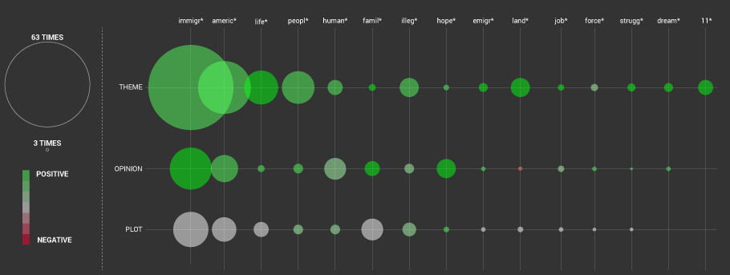

How to read it
These glyphs show how and how much IMDB users talk about technical aspects of a movie: the intensity of a certain area indicates that a lot of characters have been written about that argument (casting, photography, soundtrack or direction) and viceversa.
Furthermore, the tint you perceive looking at a certain area indicates how Imdb users spoke about it: in a more neutral, positive or negative way.

1. Reading the previously-subdivided parts of the comments which are about the topic-related aspects of movies in order to find out a list of categories (plot, opinion and theme) to clusterize these sentences.
2. Creating a txt file composed by all the topic-related sentences previously individuated.
3. Opening this txt file in Yoshikoder.
4. Discover what words are the most recurring thanks to the command report-> count words.
5. Selection of the 15 most recurring words considered to be interesting in order to see how users speak about topic-related.
6. Creation of one pattern (dictionary->add category->add pattern) for each selected word. Where necessary, the pattern has been created typing just the prefix of the selected word followed by an “*” (example:”immigr*”) in order to find more words in the txt.
7. Creation of a concordance (concordance->make concordance) for each pattern.
8. Excel exportation of each concordance.
9. Creation of an excel file containing every concordance.
10. Reading of each concordance in order to categorize them in the three categories (plot, opinion or theme) and in order to declare if each one speaks in a neutral, positive or negative way.
11. Creation of a scatterplot in Illustrator in which the diameter of every circle depends on how much concordances have been found on that argument (plot, theme or opinion) related to a certain word or prefix (example: “crim*”). On the other hand, the color of every circle depends on the how users spoke about that argument (in a positive, neutral or negative way).